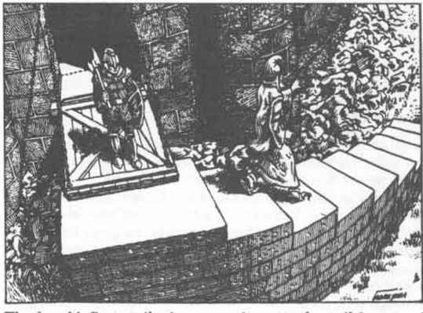

拉里的法术 · Rary’s Spells

Rary 的共情感知术（预言系）
解释／描述： 此法术使施法者能够感知生物、人物或动物的基本情绪，例如恐惧、饥饿、口渴、愤怒、疼痛、喜悦或爱。此法术对所有拥有心智的生物有效，但对自动机、魔像、亡灵或来自其他位面的非人类生物无效。每五轮只能探查一个生物，并且生物必须处于施法者视线内，不能躲在门或墙后。心智受到屏蔽的生物无法被共情探查。共情感知术的材料成分是一枚铜币。
Rary 的能力借取术（预言系－变化系）
解释／描述： 使用此法术，法师可以暂时获得另一生物已知的一项非武器熟练项。施法者必须接触已经拥有所需技能的生物。如果该生物愿意转让自己对熟练项的知识，转让会顺利发生。如果该生物不愿转让熟练项，则有权进行对法术的豁免检定，以阻止转让。被接触的生物不会失去对熟练项的知识，只是允许施法者也知道该熟练项。只有非武器熟练项可以通过法术转让。其他技能、能力、力量或知识类型都不能转让。法师使用该熟练项的能力等级，完全等同于原拥有者，即使该熟练项适用的能力值在施法者和生物之间不同。
Rary 的记忆改变术（附魔系／魅惑系）
解释／描述： 这个比遗忘术更强大的版本，允许法师主动改变生物记忆的一部分。施法者能够影响的记忆部分，限定为该生物一生中的某个特定事件。真实事件的记忆可以按施法者的意愿改变。法师可以将关于该事件的真实事实替换成虚假事实，甚至可以在生物心中放入一段全新的记忆，使生物记住一个从未发生过的事件。然而，施法者无法将某个事件的记忆全部移除。事件发生在多么久远的过去，不受时间限制。生物有权进行对法术的豁免检定，以避免自己的记忆被改变。治疗术、复原术或祈愿术会纠正对生物记忆所做的任何改变。
Rary 的心灵扫描术（预言系）
解释／描述： 此法术允许对未受屏蔽的心智进行比 ESP 更深入的研究。探查第一轮，施法者可以捕捉生物的表层思想或情绪；在第二至第四轮的研究中，可以读取更深层的思想或记忆（允许对法术进行豁免检定）；从第五轮开始，则可以读取所有更深层内容。施法者可能了解到生物的梦境、被压抑的记忆或原始欲望。每轮深入探查可以了解或研究一个主要事实或主题。能够探查哪些主题，限制与 ESP 法术相同。
Rary 的法术增强术（变化系）
解释／描述： 这个单词法术会集中并增强法师所施法术的效果。法术增强术先施放，随后在同一轮内立即施放需要增强的法术。增强后的法术会以更强大的力量命中，使针对该法术的所有豁免检定承受 −2 处罚。
Rary 的心灵护盾术（变化系）
解释／描述： 此法术用于保护生物免受对心智的侵入。能够探查心智的法术或精神力量对该生物没有效果。该生物针对所有能够影响思想、记忆或行为的附魔／魅惑魔法——魅惑、暗示、安静、情绪、迷恋或其他类似魔法——的豁免检定获得 +2 加值。心灵护盾还允许以 −2 进行豁免检定，以避免胁迫术。
Rary 的过去重演术（预言系）
解释／描述： 此法术使施法者能够读取房间或区域内残留的精神印象，将过去发生的事件作为所有位于该区域的人都能清楚看见的幻象重演。特别异常或暴力的事件发生时，会留下能够保留多年的精神振动。事件越重要，精神残留越强，印象持续的时间也越长。法师施法时，当前区域内最强的印象会进入施法者的心智。产生精神印象的事件会在施法者心中以实时重演，因此重演所需时间与原事件完成所需时间一样长。心中的重演清晰无比，施法者可以轻易辨认人物、生物或物体。
如果在同一区域再次施放法术，便会重演制造第二强精神印象的事件。施法者可以继续重演过去的事件，读取区域内越来越弱的精神印象，直到所有精神残留都被查看过。
Rary 的高级法术增强术（变化系）
解释／描述： 此法术增强术会增加法师所施法术造成的伤害。单词法术增强术先施放，然后施放要增强的攻击法术。攻击法术发射时，针对该法术的所有豁免检定以 −1 进行。法术每个伤害骰额外造成 1 点伤害，因此火球会造成每个骰 1d6 + 1 点伤害。在法术增强术之后施放魔法飞弹时，每枚飞弹造成 1d4 + 2 点伤害。
Rary 的心灵纽带术（预言系－变化系）
解释／描述： 借助此法术，法师可以在两个或更多智力为 6 或更高的生物之间建立心灵感应纽带。纽带只能在自愿的生物之间建立。参与生物不必使用相同语言，也能通过纽带交流。每三个施法者等级可以将心灵感应纽带施加于一个生物，因此 16 级法师可以在五个生物之间建立联系。纽带形成后，生物只有留在同一位面，才能保持联系。纽带不会赋予任何特殊力量或影响。永久术没有能力将心灵感应纽带变成终身联系，但祈愿术可以做到，尽管以这种方式永久连接的生物不能超过两个。
Rary 的紧急言辞术（变化系）
解释／描述： 此法术使法师能够特别准备另一个法术，以便在紧急情况下快速施放。紧急言辞术先施放，随后施放要准备的法术，但要省略该法术的最后一个词。当法师需要施放准备好的法术时，只需说出最后一个词。说出最后一个词只需一段时间，因此大多数法术都能节省大量时间。准备好的法术在施法者心中只能保持一天，之后会萎缩并从记忆中消失。施法者心中任何时候最多只能准备两个法术。几乎任何 6 级或更低的法术都可以准备快速施放，但下列法术除外：寻找魔宠、魔镜、召唤元素、预置术、物品附魔、诱捕术、守卫与结界、传奇知识、泰瑟变形术、有限祈愿、拟像、真名、束缚术、永久术、援助术和祈愿术。材料成分是一颗价值 1,000 金币的蓝宝石，施法时会被碾碎。
Rary 的防侦测术（防护系－预言系）
解释／描述： 此法术会保护生物免受所有探知尝试或侵入式预言。听觉千里眼、视觉千里眼、ESP、共情、心灵感应、水晶球或魔镜都不能成功定位、侦测或研究受保护生物。无论窥探者与生物之间的距离有多远，生物都会立即察觉这次尝试。如果法术施放在法师自己身上，施法者集中一轮后，每个等级有 5% 的几率推知窥探者的位置。窥探者必须立即进行对法术的豁免检定，否则其身份会被揭露。侦测善恶和知晓阵营也不能对受影响生物发挥作用。材料成分是一颗价值 5,000 金币的星形蓝宝石，必须在法术持续期间一直留在生物身上（法术结束后会消失）。
Rary 的位面真相术（预言系）
解释／描述： 此法术是知晓阵营术更精确、更严格的版本。研究第一轮，生物的阵营会向施法者揭示。集中第二轮后，生物的家乡位面会被揭示。生物崇拜的神祇也会为法师所知。法术持续期间，每两轮可以研究一个生物。